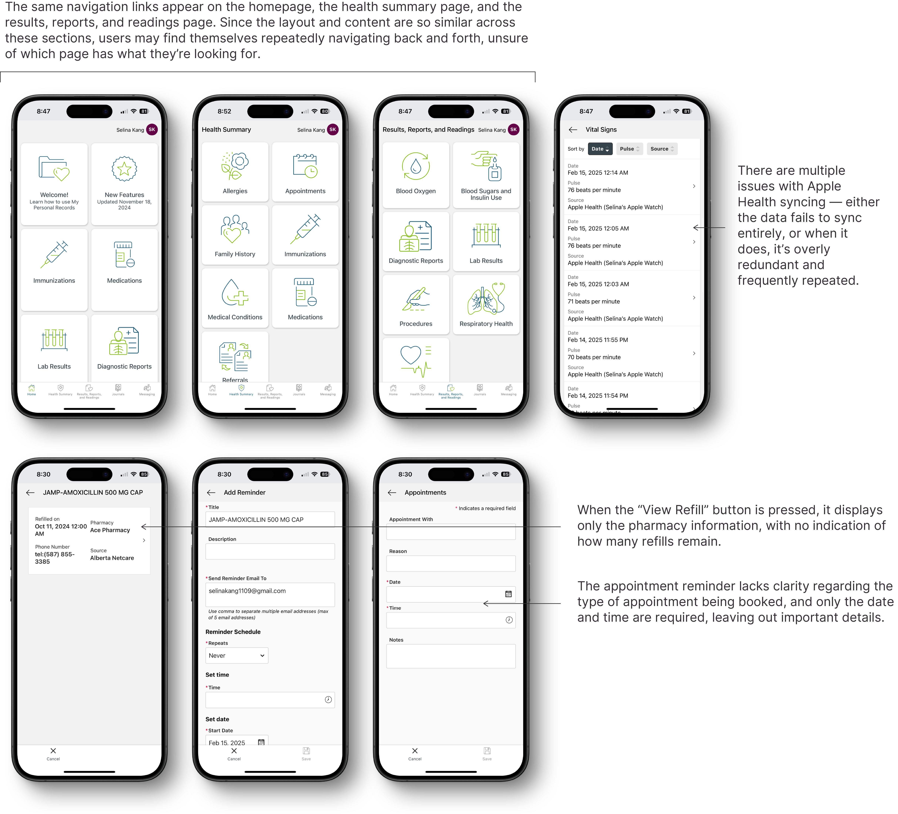
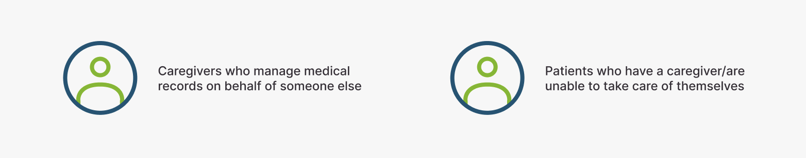
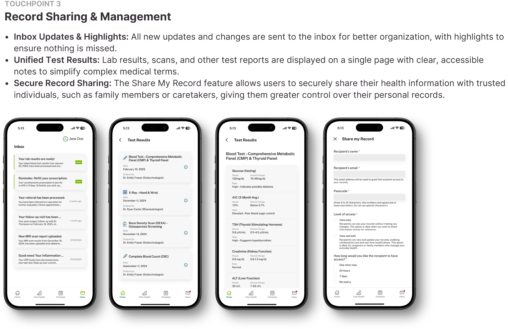
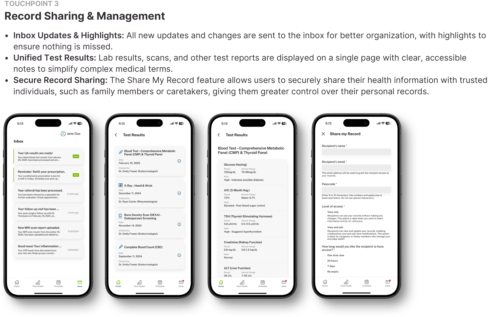

ROLE: UX/UI DESIGNER & RESEARCHER | PRODUCT DESIGN | TIMEFRAME: 49 DAYS
MyHealth Records is an online platform providing Albertans secure access to their health data, including lab results, medications, immunizations, and wellness tracking.
The goal of MyHealth Records is to make it easier for Albertans to manage their health by providing convenient access to important health information, helping them stay informed and share their data with those who matter most.
View PrototypeWhile MyHealth Records helps people access their health information, many find it confusing and difficult to use. Important features can be hard to find, and the platform lacks accessibility options, making it frustrating for some users. As a result, people may struggle to manage their health properly or lose trust in the system.
I began by reviewing existing materials, including online discussions, reviews, and my own observations. I used the insights from these sources to create maps that reflect my understanding of these pain points.
Given the limited time and scope of this project, I created a user persona to gain a deeper understanding of the chosen target user group— patients living with long-term or chronic illnesses.
After conducting research and creating a journey map, these are the three touchpoints that I decided to focus on.
The large number of categories and content within the app prompted me to conduct a card sorting session with four users. The users were presented with all the touchpoint actions available in the app and asked to categorize them. This approach helped me understand how people naturally group and navigate the information, helping to create a more organized structure for the re-design.
Using the insights from the card sorting, I reorganized the app’s actions into new categories. This allowed me to design a more streamlined navigation bar and improve the overall structure.
Before finalizing my prototype, I thought about users I may have missed who would use and benefit from this app. I discovered two user groups:
 
